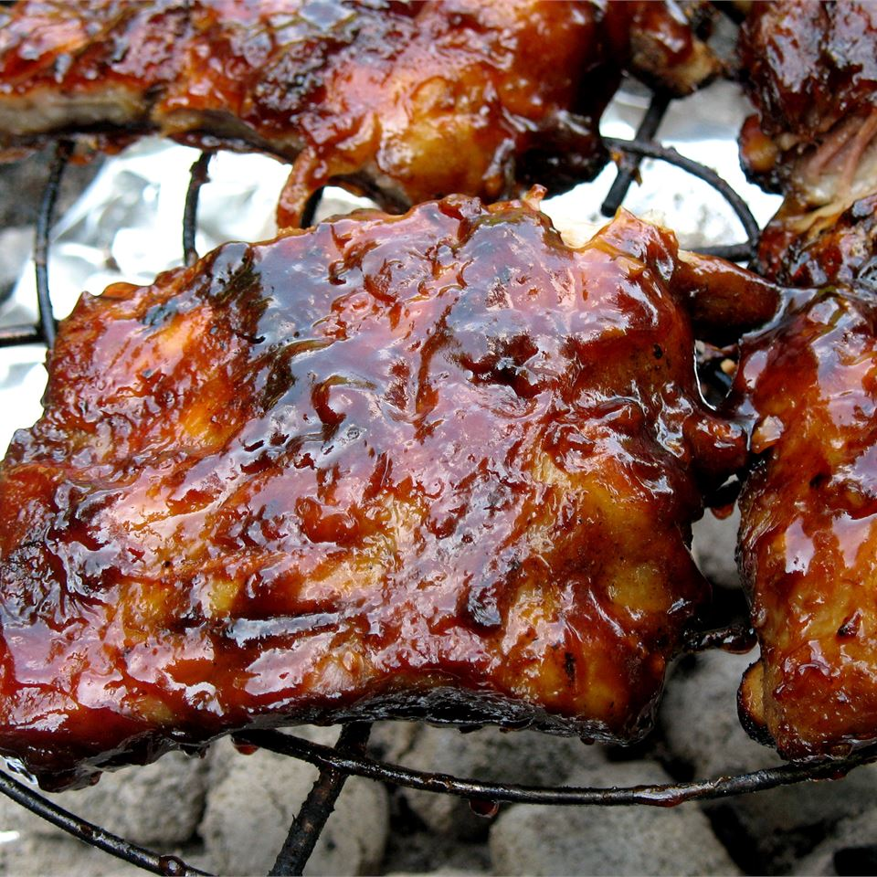

Barbecued Ribs

How to make these barbecued ribs
Two day ribs, but worth the effort. Baked and marinated with a rub
overnight, then grilled with barbecue sauce.
Ingredients
- 4 pounds baby back ribs
- 4 cloves garlic, sliced
- 1 tablespoon white sugar
- 1 tablespoon paprika
- 2 teaspoons salt
- 2 teaspoons ground black pepper
- 2 teaspoons chili powder
- 2 teaspoons ground cumin
- 1/2 cup dark brown sugar
- 1/2 cup apple cider vinegar
- 1/2 cup ketchup
- 1/4 cup chili sauce
- 1/4 cup Worcestershire sauce
- 1 tablespoon lemon juice
- 2 tablespoons onion, chopped
- 1/2 teaspoon dry mustard
- 1 clove garlic, crushed
Steps
- Preheat oven to 300 degrees F (150 degrees C). Place ribs on a rack
in a shallow roasting pan. Scatter 4 cloves of sliced garlic over
ribs. Cover and bake for 2 1/2 hours. Cool slightly.
-
In a small bowl, mix together white sugar, paprika, salt, black pepper,
chili powder, and ground cumin. Rub spices over cooled ribs. Cover and
refrigerate overnight.
-
In a small saucepan, mix together brown sugar, apple cider vinegar, ketchup,
chili sauce, Worcestershire sauce, lemon juice, onion, dry mustard, and 1
clove garlic. Simmer over medium-low heat, uncovered, for 1 hour. Reserve
a small amount for basting; the remainder is a dipping sauce.
- Preheat grill for medium heat.
- Place ribs on grill. Grill, covered, for about 12 minutes, basting with
the reserved sauce, until nicely browned and glazed. Serve with remaining
sauce for dipping.